Getting the Power IK Unreal Plugin
The Power IK Unreal Plugin can be purchased and installed through the Unreal Marketplace.
Power IK Unreal Plugin is currently available only for Unreal 4.24 on Windows 64 bit. If you require a different version for a different platform, please contact support@poweranimated.com.
Installation
The fastest way to get started with Power IK is to purchase it from the Unreal Marketplace and use the Epic Games launcher to install it directly into your engine.
To install it manually, follow these steps:
- Download and unzip the PowerIK plugin
- Copy the \PowerIK directory to your project plugins folder: C:\UnrealProjects\MyProject\Plugins
- Right click on your .uproject file and select Generate Visual Studio project files
- Build and launch the project as normal..
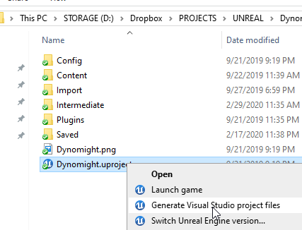
Note: If you encounter an error when starting Unreal after installing Power IK, please check that you have the Visual Studio Prerequisites installed for Unreal Engine. Missing dll errors (VCRUNTIME140_1.dll for example) are usually resolved by installing the Visual C++ Runtime.
Quick Start
To use Power IK, you need a Skeletal Mesh and an Animation Blueprint.
This tutorial uses the Dino included in the Demo project.
-
Right-click in the Content Browser to create an Animation Blueprint. Associate it with the Dino skeleton and name it ABP_Dino_Tutorial.
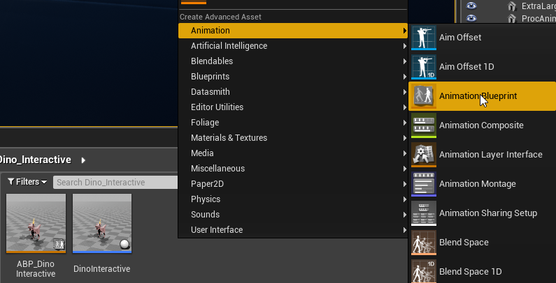 -
Open the AnimGraph, right-click and create a Power IK Solver node.
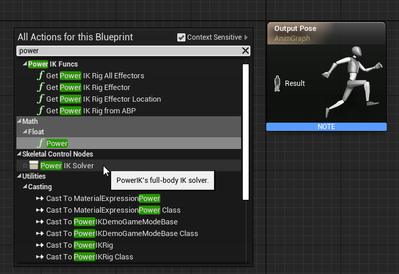 -
Set the Character Root to the top joint in your creature. Usually “hips” or “pelvis”. For the Dino we use “pelvis”. This is not usually the absolute root of the Skeleton, but the top node in the creature’s anatomy (the one that translates).
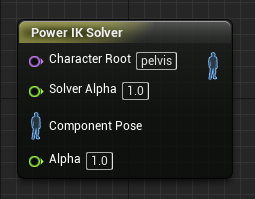 -
Select the Power IK Solver node and in the details panel, click the “+” icon twice to make two Effectors.
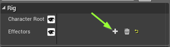 -
Right-click on the node and select Refresh Nodes to see the input pins for the Solver effectors. 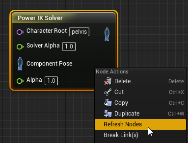
-
Click and drag one of the effector pins and select Make PowerIKEffector. Repeat for the second effector pin.
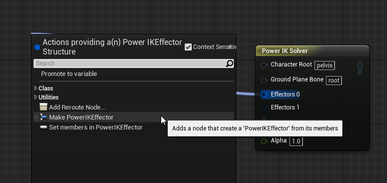 -
Set the Bone Name field to the bone you want to touch the effector. For the Dino, we will grab both his feet: “heel_l” and “heel_r”.
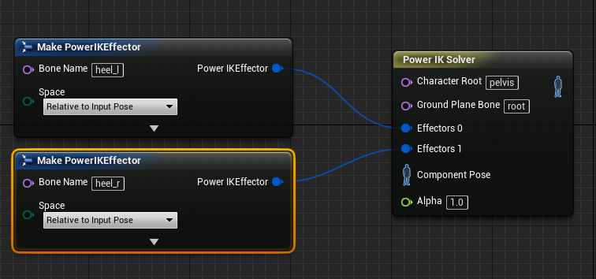 -
Connect the solver output to the Output Pose.
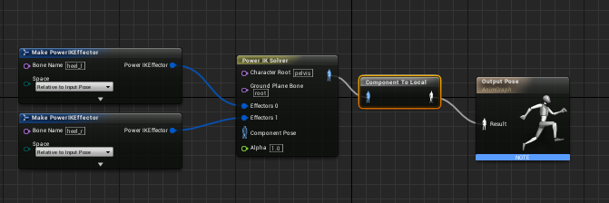 -
Compile the anim blueprint. Then select the Power IK Solver node and observe in the viewport that both feet have yellow diamonds on them. These are the effectors.
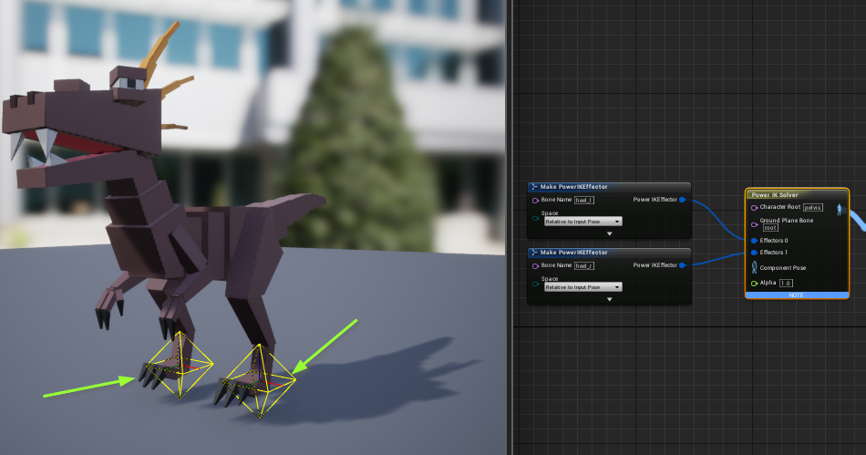 -
Open the “heel_l” Effector node and set the translation to 0, 0, 50. Then compile and observe new Effector location in the viewport:
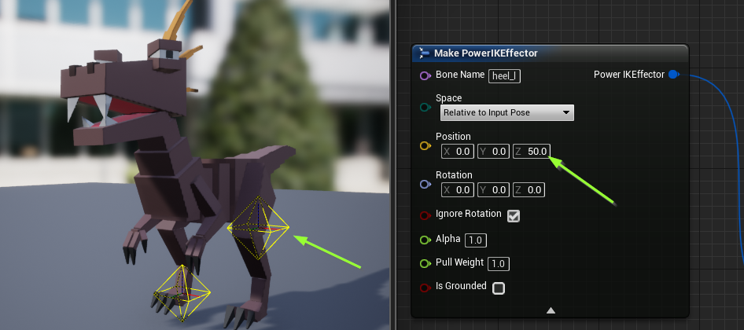 -
Drag the Skeletal Mesh asset into a level. In the details panel, set the Anim Class to the animation blueprint asset we just created:
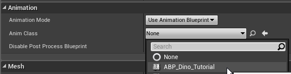 -
Now click Play. Observe that the left foot is reaching up, while the right foot remains planted on the ground. The pelvis, being free of any effectors, will automatically translate and rotate to help the feet reach the targets.
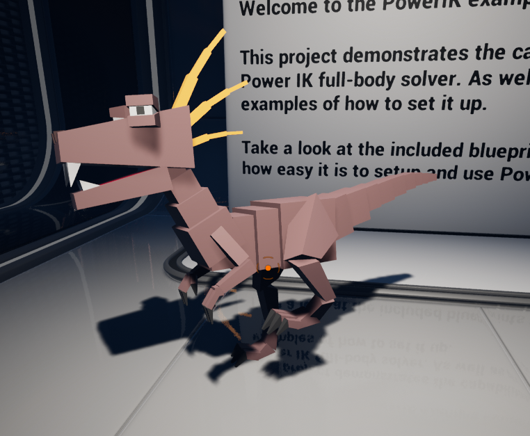
Congratulations! Power IK is now setup and working.
From here, you are ready to drive the positions and rotations of the effectors through blueprint. These transforms can come from any source. Sophisticated procedural animation systems can be built ontop of Power IK.
For testing/debug purposes, you can create a PowerIK Interactive Rig which allows you to interactively pull your effector positions with the mouse.